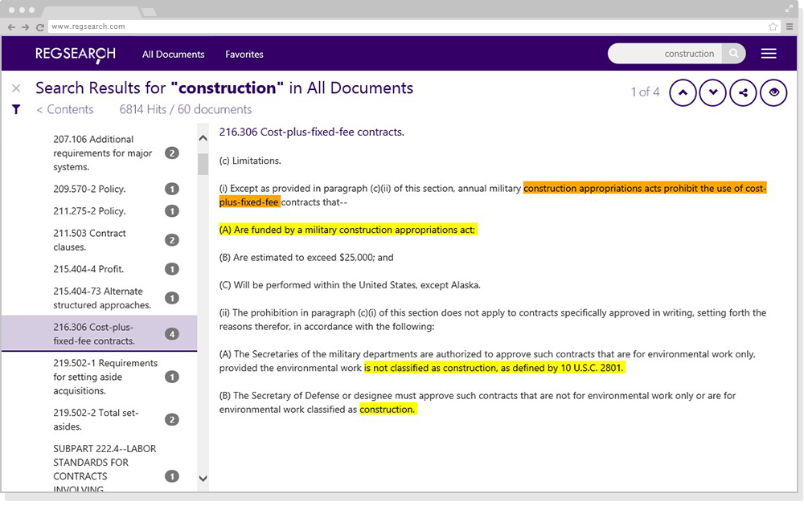
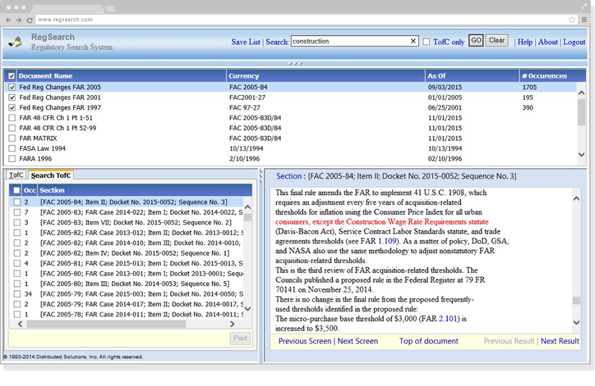
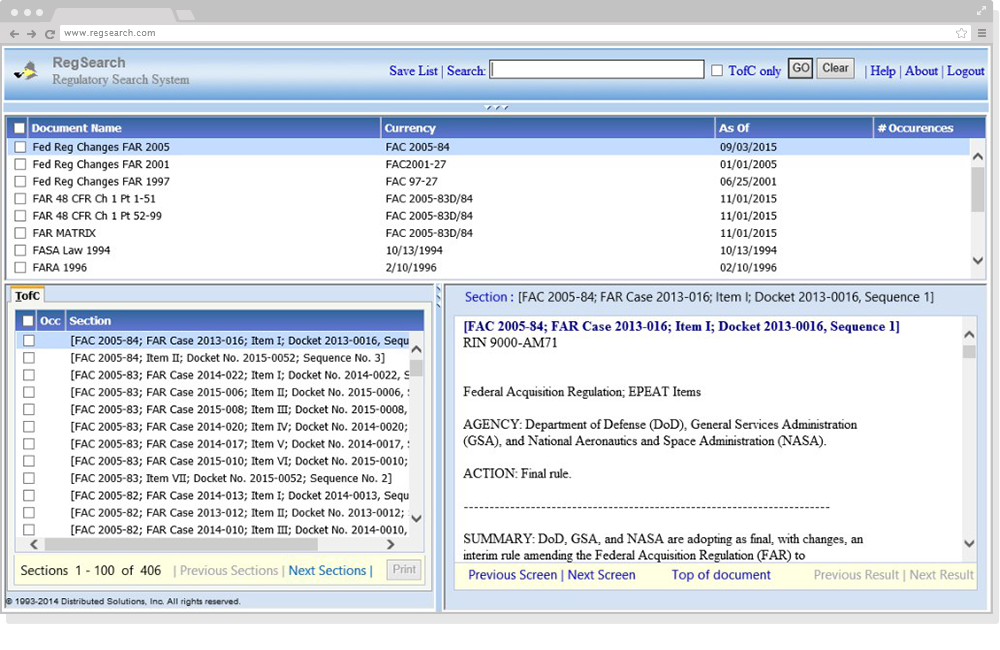
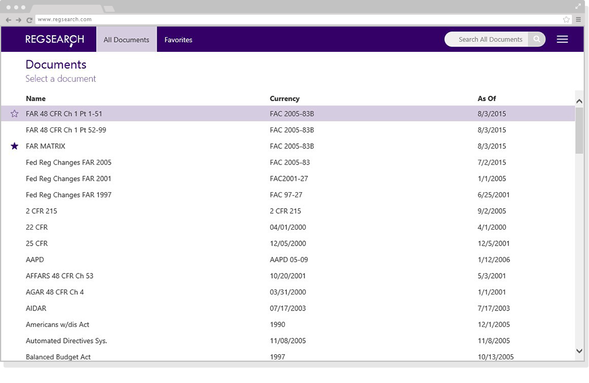
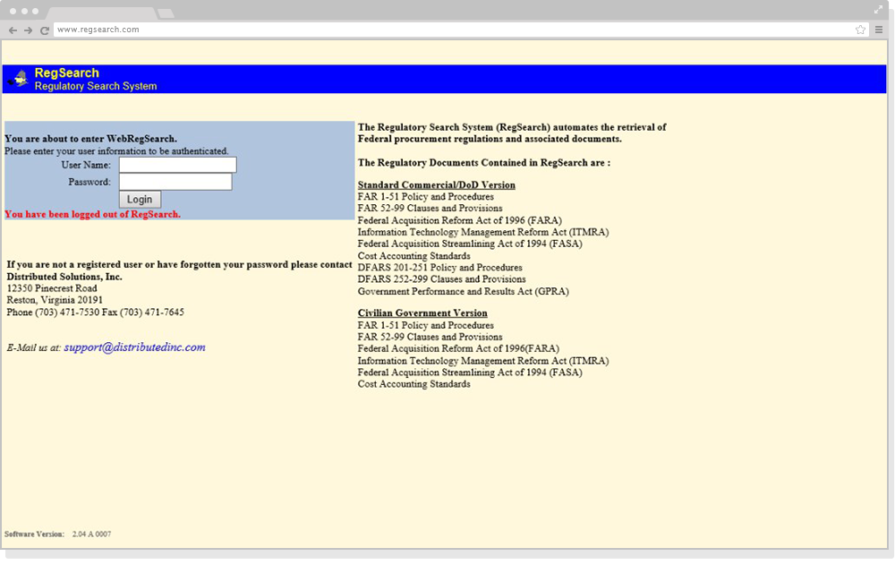
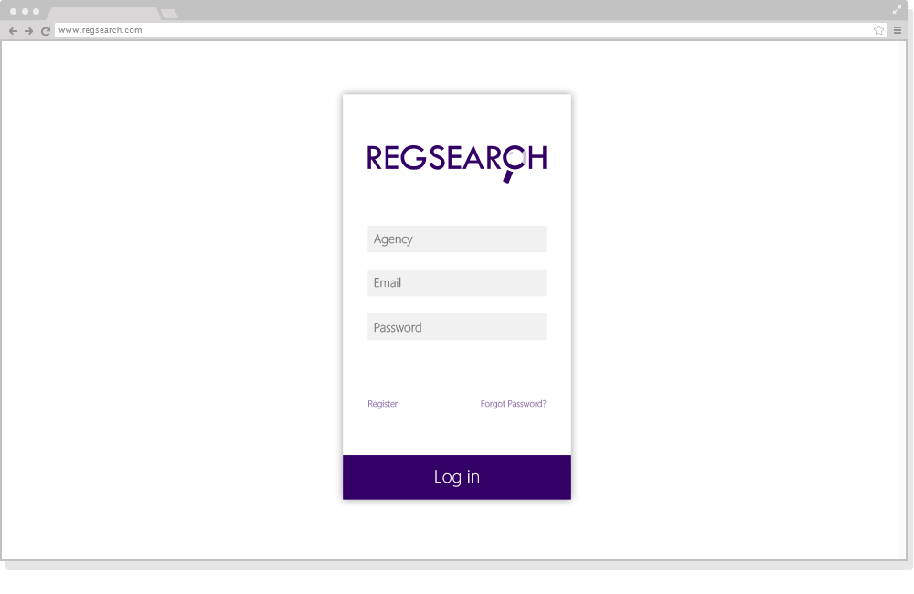

RegSearch
RegSearch is a research tool for federal procurement regulations. I redesigned it from a legacy app that only ran in Internet Explorer 7 into a responsive product, growing the reading pane from about 25% to 75% of the screen and adding search-within-search, document sets and sharing. Built at Distributed Solutions with a team of five over eight months in 2016.

Before and after
Before

After
Before

After

Before

After

Designed for reading
Acquisition professionals spend their day inside hundred-page regulations, but the old reading pane used only a quarter of the screen. The redesign gives the document three quarters of it and moves everything else to the edges. Search hits use high-contrast highlights instead of red text in a block of black, and a consistent icon set replaces the old checkboxes and links.
Built for two kinds of research
Researchers dig deep into one topic across many documents; case workers cross-check a specific rule under time pressure. Both used to copy text out or print entire documents. Search-within-search, document type filters, bookmarks, PDF export and shareable document sets now handle that work inside the tool.
Branding
I also designed a new RegSearch logo, repositioning it as a modern research tool rather than a legacy government utility. It set the color palette and icon language for the interface.
The redesigned RegSearch replaced the legacy tool across the client's organization and works in every modern browser and on mobile.
Fill in: quote from a Distributed Solutions teammate